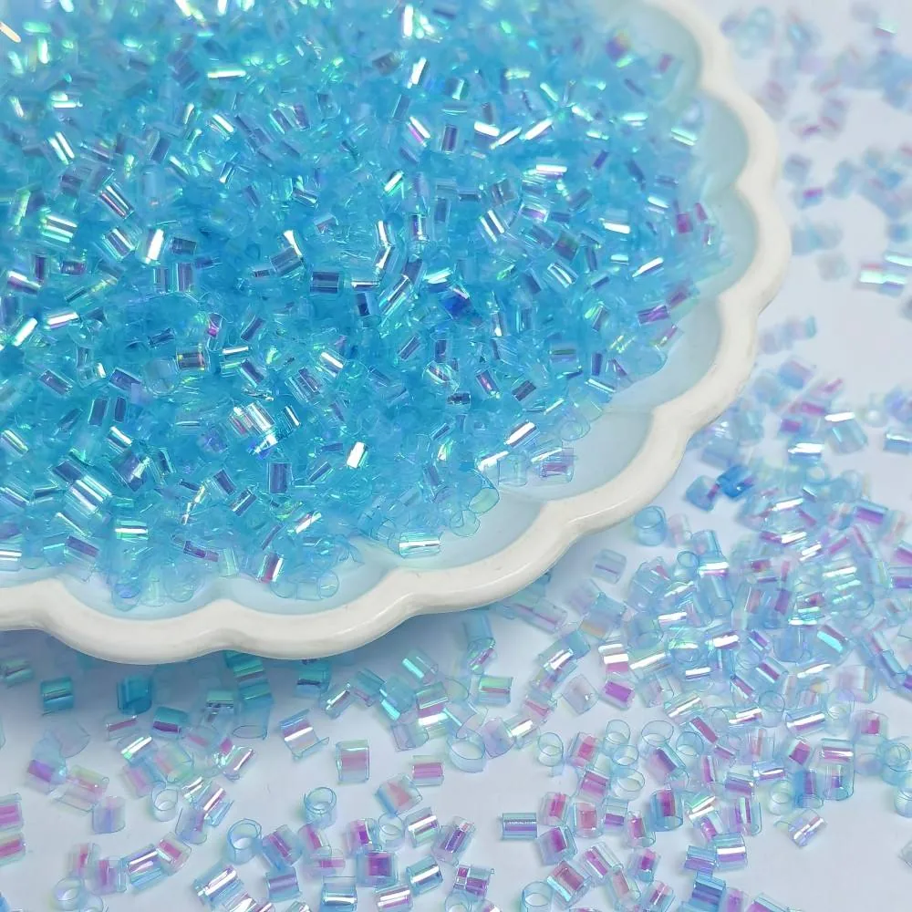
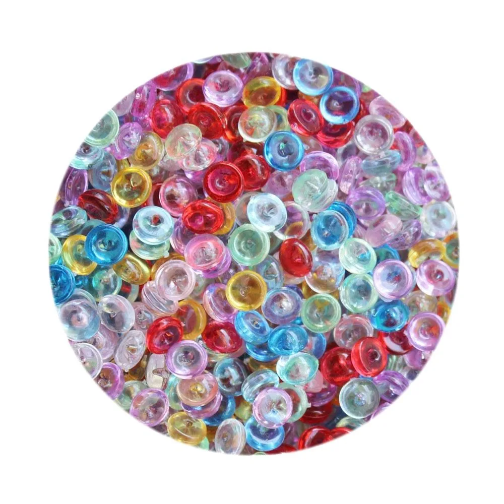

YM109 · Iridescent bingsu reference
- Listed material
- PET
- Pack reference
- 500 g/bag (source listing reference)
This and the second YM109 listing share a main photograph. Specify the product link and approved sample.
View product and request a quote →Updated November 9, 2026 · by the Qula Craft Sourcing Team — the people who quote and pack these lines every week.

Order by product link as well as SKU. The two YM109 references share their first photograph; this is not evidence that their selected batches are identical.
This and the second YM109 listing share a main photograph. Specify the product link and approved sample.
View product and request a quote →
The source does not identify a specific material. Confirm it before comparing samples.
View product and request a quote →Pack references describe the listed unit, not a minimum order or a counted yield. Confirm current MOQ, samples, assortment and dispatch date in your quotation.
Start with the result you want from the finished slime: visible inclusions, a particular sound, or a lighter-looking texture. Those are selection goals. A photograph cannot show how a filler will behave in your formula, and a material name does not establish color stability, stretch or shelf life.
| Reference | What the source identifies | What to confirm |
|---|---|---|
| YM109, straw-style listing | PET; 500 g reference pack | Selected color, appearance, current pack and sample quantity |
| YM109, second catalog listing | PET; 500 g reference pack; tube shape in the source | Use this product link when requesting the sample; the SKU alone is ambiguous |
| YT008, fishbowl-style reference | Transparent colorful, irregular shape; specific material unpublished | Material, selected size, pack unit and performance in the intended base |
The two YM109 listings share their main photograph. Include the exact product link and a reference image in your enquiry, then approve the actual sample. Do not treat the shared image as proof that the references or batches are interchangeable. The YT008 listing does not establish an acrylic composition, even though it appears within the wider bead catalogue.
Measure the quantity used in one trial jar. Divide the available pack weight by that measured dose, keeping the same unit on both sides of the calculation. For example, a hypothetical 500 g pack divided by a measured 5 g dose gives 100 portions before handling loss. This is arithmetic, not a recommended dose or a guaranteed production yield.
Repeat the trial if you change the jar size, base, filler reference or target texture. If you sell a separate topping packet, measure that packet separately. Keep the packing allowance and rejected trial material in your production plan rather than assuming that every gram becomes a sellable jar.
PET in the YM109 specification identifies the listed material. It does not certify the pigments, coating or finished slime formula. Ask which documents apply to the selected item and destination, and agree any testing requirements before ordering.
A filler mixed through the base and a decorative piece placed on top perform different jobs in your design. Compare clay slices and resin decorations if you want fruit motifs or a larger focal piece. Confirm every component in the actual formula instead of applying one sample result to the whole assortment.
Foam balls are another texture option to discuss with a supplier. This guide does not establish a current QULA foam SKU, material or price. Request a specific reference before comparing pack cost or planning a floam collection.
Include the product link, SKU, desired color, quantity in confirmed pack units, sample requirements and delivery destination. State whether you need loose filler, separate topping packets or a proposed combined assortment. Minimum order, sample charges, available packing and dispatch dates are confirmed in the quotation.
Use the glitter and filler catalogue to build the shortlist, then review the sample and inspection checklist. Keep the approved reference and the actual quotation together so the order can be checked against the same facts.
Both source listings identify PET. This does not establish coating, color stability or compatibility with every slime formula. Confirm the selected reference and test an actual sample.
Divide the available weight by your measured dose per jar, then allow for your actual packing process. A pack weight is not a recommended dose or a guaranteed yield.
They share their first photograph and the same SKU. Use the exact product link and an approved sample to identify your selection; the photograph alone does not establish equivalence.
The source does not identify a specific material. Request confirmation for the selected reference before ordering.
The full stock range including bingsu, hollow stars and holographic paillettes.
Read guide →Compare clay slices and resin charms for slime by texture, dosing, sample checks and sourcing needs.
Read guide →Plan slime supplies, decorative add-ins, trial quantities and packaging before placing a wholesale order.
Read guide →